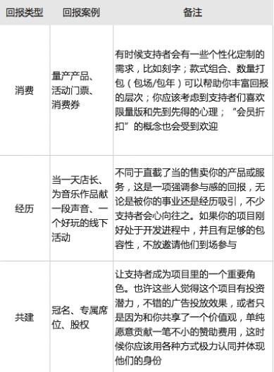

欢迎来到开始众筹发起人手册！我们希望它能帮助你开始你的项目，无论是一部电影、一个专辑、一个游戏、一个餐厅，任何新的生活，都来源于你的想象力。
年满18周岁，且为中国公民，或能提供长期在中国居住证明的非中国公民。
无论是一家餐厅、一个民宿、一所书店、一场演唱会、一部电影、一本书籍，任何来源于想象力的新生活，都可以作为你的项目。每个项目应该有一个清晰的目标，最终你会完成它，支持者将收到回报。
· 民宿/空间
· 餐厅/商铺
· 农业/食材
· 其他（一本书、一部纪录片、一张专辑、一款手工艺品、一场演唱会等文化创意类项目） 因为监管和后期维护存在一定难度，暂时不接受个人发起公益救助类项目。
筹款成功，开始众筹将抽取一定比例的众筹金额作为平台佣金，同时代扣1.5%的第三方支付平台手续费；项目按常规下线时，筹款仍未成功的，开始众筹不会收取任何费用。
A、权益类回报：实际已众筹款的5%（合计扣除权益类回报款项的6.425%）
B、消费类回报：实际已众筹款的10%（合计扣除消费类回报款项的11.35%） 注：消费类回报中文化创意类项目，佣金比例统一按实际众筹款的5%（合计扣除项目实际众筹金额的6.425%）计算，即款项主要用途包括但不限于： a、拍摄、制作或宣传推广影视作品（电影、网剧、纪录片等）
a、拍摄、制作或宣传推广影视作品（电影、网剧、纪录片等）
b、举办活动（在特定场所展示实物；组织会议、演唱会、话剧等） 佣金比例为实际众筹款的5%（合计扣除项目实际众筹金额的6.425%）
· 股权: 你可以出让项目公司一定比例的股权，例如支持者可以通过投资2万元成为共建人，获得投资周期内项目公司1%的股权，每年可获得相应比例的分红收益，你应该在前期提供一个安全的退出窗口，可供共建人选择退出，并协商一种退出方式，也要考虑到周期结束后共建人的退出机制。但在这之前，我们会对你和项目本身进行尽职调查，以核实项目估值和风险程度。
· 加盟: 总公司向加盟者提供一项独特的商业特权，并加上（人员培训、组织结构、经营管理、商品供销）等方面的无条件协助，加盟者通过支付加盟费至总公司，与其建立契约关系。
· 代理:公司作为出口商，接纳支持者成为该产品的代理商，以协议具体约定的方式代理销售公司旗下的产品。
· 代销: 项目方在提供一项消费类回报的基础上，允诺可为支持者在其他渠道销售此项回报内的产品或服务，支持者获得该笔收益。
所有项目一旦通过二审最终上线，都有可能免费获得“开始吧”等微信公众号的推广机会，总体流量基本达到百万级别。
项目结束后，请和项目经理确认实际筹得的金额，如果达成或超过最初设定的目标金额，视为成功；否则视为失败，所有款项将退回给支持者。
流程如下：
提交项目
风控过审
项目立项
内容筹备
项目上线
点击链接查看提交项目详细步骤:https://blog.kaistart.com/organiser-unverified/
需提交内容基本框架如下：
· 我的自述：
个人经历不少于800字；
相关照片不少于5张
· 我的项目：
项目详细介绍；
实物类项目图片不少于10张；
空间类项目图片不少于20张，包含空间外观与局部；以及设计稿件。
· 为什么众筹：
论述你发起众筹的原因，不少于300字。
· 回报设计：
罗列你所能提供的回报；
展现回报的图片。
· 团队介绍：
如果项目背后有团队，介绍你的团队成员，并附上集体及每个人的照片。
· 项目进度表：
项目从起步到目前现状，以及后续的项目计划，和关键性节点展示。
如果第一时间无法完成上述完整要求，可以先将核心内容（我的自述、我的项目、为什么众筹）和其他优势组织成文后提交审核。
提交项目后平台会进行初审，初审通过后会有工作人员跟您联系，接洽后续风控审核事宜；
风控流程如下：
· 确认项目上线类型
· 提交项目尽调资料清单
· 法律合规
· 估值复核
· 确定项目周期与投后模式
· 信用评级
· 出具项目风控报告
发起人需要提供的项目尽调资料根据项目类型的不同包括但不限于以下要求的部分：
<一>、征信必要材料
1、发起人身份证正反面复印件
2、发起人个人征信报告（中国人民银行征信中心：）
3、企业法人身份证正反面复印件（企业法人与发起人为同一人则无需提交）
4、企业法人个人征信报告（企业法人与发起人为同一人则无需提交）
5、营业执照复印件
6、场地/土地租赁协议复印件
7、新店装修效果图复印件
8、新店需要提供装修合同
9、项目公司章程（公司未完成注册可以补充提交）
<二>、估值必要材料
1、已营业项目公司最近一年流水和资产负债表
2、项目公司未来三年盈利预测，
包含主营业务明细、成本明细以及业务增长说明
3、新店装修需提供装修费用清单
<一>、自然人发起人必要材料
1、发起人身份证正反面复印件
2、发起人个人征信报告（中国人民银行征信中心：http://www.pbccrc.org.cn/）
3、产品质检报告复印件
4、商标注册证明或者商标受理证明
5、专利证明或专利授权或者专利申请号（没有则无需提交）
<二>、企业发起项目必要材料
1、发起人身份证正反面复印件
2、发起人个人征信报告（中国人民银行征信中心：http://www.pbccrc.org.cn/）
3、企业法人身份证正反面复印件（企业法人与发起人为同一人则无需提交）
4、企业法人个人征信报告（企业法人与发起人为同一人则无需提交）
5、营业执照复印件
6、产品质检报告复印件
7、商标注册证明或者商标受理证明
8、专利证明或专利授权或者专利申请号（没有则无需提交）
项目立项的主要标志即发起方和平台之间签署协议；
在项目风控审核通过之后，项目即可立项，发起人完成和平台之间发起众筹所需的相关协议签署之后，进入下一环节；
进入项目内容筹备阶段，重点部分参考以下问答：
(一)必须要有视频吗：
是的，视频是用于吸引别人支持你项目的重要途径。但是在项目一审阶段，我们不会要求你必须上传视频，通过审核后我们会协助你润色完成。
(二)为什么项目呈现要用第一人称：
我们推崇营造一种“浸入式”的阅读体验，通过这种方式，你可以快速寻找到有着相同趣味主张、又不满足于商业化统一产品的高感性用户。所以发起人必须是一个真实的人，而不能是一个团体组织或者一个企业。
(三)如何制定回报方案：
一些回报是显而易见的，比如音乐专辑，但有些回报会更有创意，并且更有个性，会让你的支持者觉得他也是项目的参与者，而这种参与是值得的。最好的项目回报都是混合的。这里有常见的几类回报：

(四)如何定价：
你的一些支持者可能只会贡献10元，但有些人可能会贡献10000元。所以一定要提供一系列的奖励，可以吸引所有的各种各样的人。
(五)什么是尾款：
权益类回报的支付流程会分解为“预约金”和“尾款”两个阶段，期间你需要组织这部分支持者参加路演，与你签署协议。
(六)谁来承担发放回报的邮费：
通常是由发起人承担邮费，如有特殊情况请和支持者协商分担。
(七)如何设定目标金额和上线周期：
目标金额没有限制，但我们建议在实事求是的基础上尽量压低，目标金额达成100%后仍然可以继续筹款。上线周期上限为90天，但控制在30天内是比较合理的。
(八)我需要和项目经理沟通什么内容：
项目经理会：
要求你补充“基本框架”中的缺失内容，甚至对你进行一次采访。
要求你提供资质文件。
协助你调整好项目文案、视频、回报方案。
询问你的传播计划和运营手段。
确认上线日期。
你可以征求项目经理对具体某个方面的建议，我们最终会对项目的真实性、合理性进行形式审核，审核通过后需双方签署《开始众筹推荐项目协议》、《补充协议》后方可上线。
(九)微信文章由谁来写：
由微信公众号的编辑负责，所以他们也将与你取得联系。
(十)我能在项目上线前拿到项目链接吗：
项目提交审核后，你可以点击官网首页右上角的头像，通过跳出栏中的“我的故事”找到项目，此时页面被定义为项目预览。你可以将这个链接分享给你的亲友，征求他们的意见和建议，但他们此刻无法支持该项目。
项目上线当日，项目经理将就该预览页面，和你做最后一次确认，同时还有微信文章的预览。注意不要外传这两则预览链接，一切以上线后为准。
在开始吧支持预约共建人档位后，为保证您的资金安全，请勿与平台及发起人之外的陌生人联系，请不要随意在公开场合留下您的联系方式，您在评论区留下的任何联系方式均会受到保护，只有您本人和发起人才能看到；
建议您在确定成为共建人之前，请详细了解项目团队信息：
· 公司背景（团队结构、品牌创始、项目情况）
· 店铺信息（投资额、选址、股东结构）
· 实际经营（产品、推广、营销、风险控制、财报披露）
· 众筹情况（金额、比例、分红、退出及转让）
· 未来发展（分店数量、区域、投资方式）
投资有风险。当您投资项目时，可能获得投资收益，但同时也面临着投资风险。您在做出投资决策之前，请仔细阅读本风险揭示书及相关协议文本，充分认识项目的风险，认真考虑项目存在的各项风险因素，并充分考虑自身的风险承受能力，理性判断并谨慎做出投资决策。
如对项目信息有任何疑问，建议您在做好充分的了解和评估后再做决定。
针对已完成共建人投资协议签署的项目，平台会协助发起团队定期披露项目经营状况相关资料，作为项目共建人，请您和平台一起监督项目发起团队是否对项目经营状况如约披露；
若您对您所投资的众筹项目存在其他质疑或发现发起团队存在任何违约行为的，您可以请求平台介入协助维权，维权专用投诉通道service@kaistart.com，我们会为您安排专业投后服务。